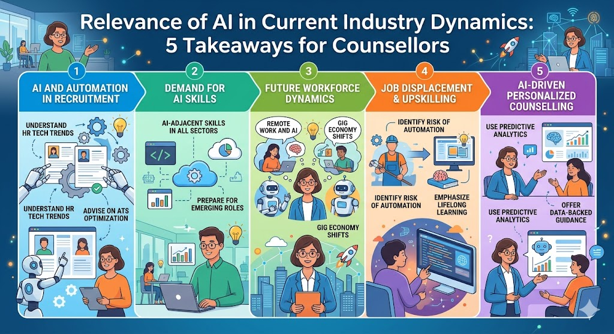

Relevance of AI in Current Industry Dynamics: 5 Takeaways for Counsellors

1. From POC to P&L: Scaling AI in the Indian Context — Interview with Rajnil Mallik, Partner & AI GTM Leader, PwC India | Salesforce Great Asia AI Summit
2. Why AI Transformation Needs a Human Touch — HBR IdeaCast | Strategy Summit 2026
Over the past few weeks I sat with two rich conversations about the state of AI in the real world — one an interview with a PwC AI leader at the Salesforce Great Asia AI Summit, and the other an episode of the Harvard Business Review IdeaCast focused on why AI transformation ultimately requires a human touch. Together, they give counsellors a compelling, grounded picture of where AI is heading in industry — and what that means for the students we guide every day.
Why This Matters for Career Counsellors
Students regularly ask us questions that are genuinely hard to answer without current industry context:
- "Why do I have to study Computer Science? Can I just know how to use AI?"
- "Why do I have to learn Data Science if AI can do it for me?"
The insights below give us solid, evidence-backed answers — drawn from the people actually leading AI adoption in global enterprises today.
A Useful Framing Before the Takeaways
Two analogies from the conversations are worth sharing with students directly. First: not every technology adoption is driven by business goals. Airport ticket booking systems, for example, have nothing to do with a company's core mission — they exist because the technology became available and the need was clear. AI is similar: it will be adopted across industries not always because companies planned for it, but because it becomes operationally unavoidable.
It is widely said that data is the new oil and AI is the new electricity. But consider this: it took 50 years after Faraday's first electrical experiments for a working power grid to appear in the United States. AI is moving far faster — and is already more invasive than electricity ever was in its early years.
5 Key Takeaways from the Sessions
1. AI Must Be Embedded into Existing Workflows — Which Means Legacy Systems Still Matter
One of the most counter-intuitive points from Rajnil Mallik's interview is that AI adoption is not a clean-slate exercise. Most large organisations run on old, complex legacy systems built over decades. For AI to deliver sustained value, it must be woven into those existing workflows — not bolted on top of them.
The practical implication is significant: traditional computer science knowledge — understanding databases, system architecture, APIs, and data pipelines — remains essential. Students who think they can skip foundational CS and simply "use AI" are missing the infrastructure layer that makes AI work in the real world.
2. Ownership and Accountability Remain Human — Always
Even when AI writes the code, the responsibility for that code belongs to a human. This was stated clearly in the discussion: moving from a pilot to a live production system requires strong human ownership and clear accountability structures. Companies are not deploying AI as an autonomous actor — they are deploying it as a powerful tool that humans must manage, monitor, and take responsibility for.
AI will change the shape of many roles — but the person who understands how to manage, interpret, and take ownership of AI output will be far more valuable than the person who only knows how to use AI as a consumer. The goal is to be the human in the loop, not outside of it.
3. Companies Are Prioritising Measurable Outcomes Over Experimentation
The era of "let's try AI and see what happens" is over in serious enterprises. Companies are now asking a harder question before every AI investment: why do we need this, and how will we measure its impact? Just because AI can do something faster or cheaper does not mean every organisation will rush to implement it. Decision-makers are careful, especially when client data is involved.
For students interested in business and technology, this is an important signal: the ability to build a rigorous business case for a technology investment — to connect AI capability to organisational outcomes — is a rare and highly valued skill.
4. Responsible AI Requires Cross-Functional Data Literacy
AI has enabled an unprecedented convergence of data across business functions. Marketing, Sales, Technology, and Product teams are now working with shared data in ways that were not possible before. Making responsible AI decisions — decisions that are ethical, accurate, and accountable — requires alignment across all of these teams.
- Better data management skills are increasingly expected beyond technical roles
- AI is becoming less of a tool and more of an operating system for entire businesses
- One unexpected benefit: AI has given teams the ability to ask better and more precise questions — the quality of the question is now as important as the quality of the answer
5. AI Helps Achieve Goals That Were Previously Out of Reach — But Only for the Right Problems
Perhaps the most nuanced insight from both sessions is this: companies are not using AI to solve every problem. They are grappling with the challenge of identifying which specific challenges AI is best suited to address. The most successful AI deployments are those where organisational ambitions that were previously too data-intensive or too complex to execute are now achievable through AI model convergence.
The meaningful pause between an idea and its AI-powered implementation — observed consistently across enterprises — is not hesitation. It is the space where humans ask: "Can AI actually do this better, and is it worth the investment?"
Useful Resources for Students
For students who want to explore AI's broader implications — both for their careers and for society — two Unifrog Know-how guides are worth assigning:
- For and Against Artificial Intelligence (AI) — Unifrog Know-how Library
- Is AI a Threat to Our Jobs? — Unifrog Know-how Library
- A to Z of Artificial Intelligence — YouTube Series
Conclusion
The core message from both conversations is consistent: AI is powerful, but it is not autonomous. It needs human infrastructure, human oversight, and human judgment at every stage. For students, this means the foundational skills — computer science, data literacy, critical thinking, and the ability to ask precise questions — are more valuable than ever. Not less.
"Data is the new oil and AI is the new electricity — but electricity still needed engineers to wire the grid."